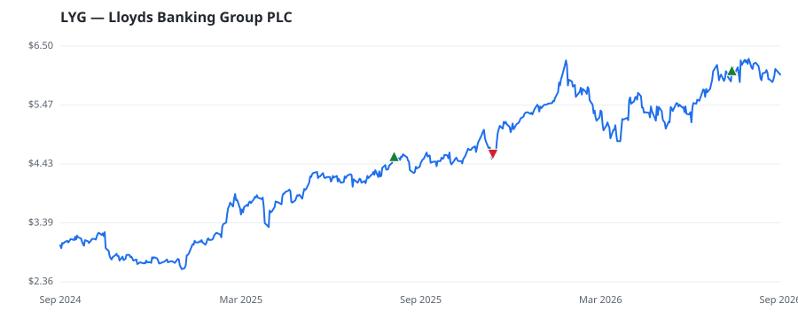

bullish · bearish · n/a — dots: price>SMA10 · SMA10>SMA50 · SMA50>SMA200 · up>down volume (20d)
Other · large cap
Members who bought LYG earned a dollar-weighted +0.2% from their disclosure dates, versus +2.3% for the S&P 500 over the same holding windows (-2.1% alpha).

▲ green = a disclosed purchase · ▼ red = a disclosed sale (plotted on disclosure date)
Lloyds is a retail and commercial bank headquartered in the United Kingdom. The bank operates via three business segments: retail, commercial banking, and insurance and wealth. In retail, Lloyds offers primarily mortgages (66% of loan portfolio), credit cards, and current accounts to its customers. Its commercial banking operation provides lending, transaction banking, working capital management, and debt capital market services to large companies and financial institutions in the UK. Insurance and wealth round out the product lineup with life and property insurance as well as pension solution · website
| Member | Chamber | Out-performer | Disclosed buys $ | Return on buys |
|---|---|---|---|---|
| Lisa McClain | house | — | $8K | +1.3% |
| Alan Armstrong | senate | — | $8K | -1.0% |
Disclosed $ figures are bracket midpoints — filings report ranges (e.g. $1,001–$15,000), not exact amounts.
This name produced 0.0% of the ranked funds’ total alpha.
| Fund | Fund alpha vs SPY | Position | % of book |
|---|---|---|---|
| JCIC Asset Management Inc. | +12% | $2M | 0.6% |
Hedge data: SEC EDGAR 13F · ranked funds beat SPY in >50% of their quarters · fund alpha = mirror-portfolio return minus SPY.